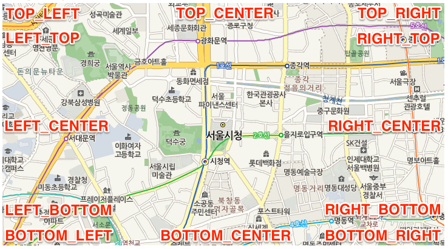

NAVER 지도 API v3의 모든 객체를 담는 네임스페이스입니다.
Classes
- AroundControl
- BicycleLayer
- CadastralLayer
- CanvasMapType
- CanvasTile
- Circle
- CustomControl
- Data
- Ellipse
- Feature
- FlightSpot
- Geometry
- GroundOverlay
- ImageMapType
- ImageTile
- InfoWindow
- KVO
- KVOArray
- LabelLayer
- LatLng
- LatLngBounds
- Layer
- LogoControl
- Map
- MapDataControl
- MapTypeControl
- MapTypeRegistry
- Marker
- NaverMapTypeOptions
- NaverStyleMapTypeOptions
- OverlayView
- Panorama
- Point
- PointBounds
- Polygon
- Polyline
- Rectangle
- ScaleControl
- Size
- StreetLayer
- Tile
- TrafficLayer
- ZoomControl
StaticObjects
- EPSG3857
- EPSG3857Coord
- Event
- Service
- TM128
- TM128Coord
- TransCoord
- UTMK
- UTMK_NAVER
- UTMK_NAVERCoord
- UTMKCoord
Namespaces
Members
-
<static, readonly> Animation
-
Animation객체는 Marker의 애니메이션을 정의하는 속성을 나타냅니다.Type:
-
<static, readonly> jsContentLoaded
-
NAVER 지도 API v3의 서브 모듈을 포함한 모든 JavaScript 콘텐츠의 로드 상태를 나타냅니다. 모든 콘텐츠를 로드하면
true로 설정됩니다.Type:
- Default Value
-
- false
-
<static, readonly> MapTypeId
-
MapTypeId객체는 NAVER 지도 유형의id컬렉션입니다.Type:
-
<static> onJSContentLoaded
-
NAVER 지도 API v3의 서브 모듈을 포함한 모든 JavaScript 콘텐츠가 로드되었을 때 호출되는 이벤트 핸들러입니다.
Type:
-
<static, readonly> PointingIcon
-
PointingIcon객체는 폴리라인의 끝 점의 강조 아이콘을 사전에 정의한 것입니다.Type:
-
<static, readonly> Position
-
Position객체는 요소의 위치 정보를 나타냅니다. 설정할 수 있는 위치는 아래와 같습니다.
Type:
Properties
Name Type Default Description CENTERnumber 0 요소를 중앙에 배치합니다.
TOP_LEFTnumber 1 요소를 왼쪽 위에 배치합니다. 요소는 왼쪽 위에서 가운데를 향해 쌓입니다.
TOP_CENTERnumber 2 요소를 위쪽 가운데에 배치합니다.
TOP_RIGHTnumber 3 요소를 오른쪽 위에 배치합니다. 요소는 오른쪽 위에서 가운데를 향해 쌓입니다.
LEFT_CENTERnumber 4 요소를 왼쪽 가운데에 배치합니다.
LEFT_TOPnumber 5 요소를 왼쪽 위에 배치합니다. 요소는 왼쪽 위에서 아래를 향해 쌓입니다.
LEFT_BOTTOMnumber 6 요소를 왼쪽 아래에 배치합니다. 요소는 왼쪽 아래에서 위를 향해 쌓입니다.
RIGHT_TOPnumber 7 요소를 오른쪽 위에 배치합니다. 요소는 오른쪽 위에서 아래를 향해 쌓입니다.
RIGHT_CENTERnumber 8 요소를 오른쪽 가운데에 배치합니다.
RIGHT_BOTTOMnumber 9 요소를 오른쪽 아래에 배치합니다. 요소는 오른쪽 아래에서 위를 향해 쌓입니다.
BOTTOM_LEFTnumber 10 요소를 왼쪽 아래에 배치합니다. 요소는 왼쪽 아래에서 가운데를 향해 쌓입니다.
BOTTOM_CENTERnumber 11 요소를 아래쪽 가운데에 배치합니다.
BOTTOM_RIGHTnumber 12 요소를 오른쪽 아래에 배치합니다. 요소는 오른쪽 아래에서 가운데를 향해 쌓입니다.
-
<static, readonly> SymbolPath
-
SymbolPath객체는 SymbolIcon의path를 사전에 정의한 것입니다.Type:
-
<static, readonly> SymbolStyle
-
SymbolStyle객체는 SymbolIcon의style을 사전에 정의한 것입니다.Type:
Properties
Name Type Default Description CIRCLEstring circle 원 아이콘을 생성하며, SymbolIcon의
radius속성을 필수로 지정해야 합니다.PATHstring path 폴리라인 아이콘을 생성하며, SymbolIcon의
path속성을 필수로 지정해야 합니다.CLOSED_PATHstring closedPath 폴리곤 아이콘을 생성하며, SymbolIcon의
path속성을 필수로 지정해야 합니다.
Type Definitions
-
MapOptions
-
MapOptions객체는 지도를 정의하는 옵션을 나타냅니다.Type:
Properties
Name Type Default Description backgroundstring 지도 요소의 배경으로 사용할 이미지 URL 또는 CSS 색상값입니다.
baseTileOpacitynumber 지도 기본 타일의 불투명도를 설정합니다. 값의 범위는
0~1이며, 기본값은 1입니다.boundsBounds | BoundsLiteral null 지도의 초기 좌표 경계입니다. 이 값을 설정하면 지도 옵션 중
center와zoom옵션을 무시하고, 지정한 좌표 경계에 맞게 지도를 생성합니다.centerCoord | CoordLiteral 서울시청 지도의 초기 중심 좌표입니다. 기본값은
서울 시청 좌표(37.5666103, 126.9783882)입니다.disableDoubleClickZoomboolean false 사용자가 지도 위에서 마우스 버튼을 더블 클릭해 지도를 확대하는 기능의 사용 여부입니다.
disableDoubleTapZoomboolean false 사용자가 지도 위에서 한 손가락으로 더블 탭해 지도를 확대하는 기능의 사용 여부입니다.
disableKineticPanboolean true 사용자가 지도를 드래그했을 때 관성 효과(사용자가 동작을 끝낸 후에도 계속되는 지도의 움직임)의 사용 여부입니다.
disableTwoFingerTapZoomboolean false 사용자가 지도 위에서 두 손가락으로 두 번 탭해 지도를 축소하는 기능의 사용 여부입니다.
draggableboolean true 마우스 또는 손가락을 이용한 지도 이동(패닝) 허용 여부입니다.
keyboardShortcutsboolean true 키보드 방향 키를 이용한 지도 이동(패닝) 허용 여부입니다.
logoControlboolean true NAVER 로고 컨트롤의 표시 여부입니다. (항상 노출로 변경)
logoControlOptionsLogoControlOptions NAVER 로고 컨트롤의 옵션입니다.
mapDataControlboolean true 지도 데이터 저작권 컨트롤의 표시 여부입니다.
mapDataControlOptionsMapDataControlOptions 지도 데이터 저작권 컨트롤의 옵션입니다.
mapTypeControlboolean false 지도 유형 컨트롤의 표시 여부입니다.
mapTypeControlOptionsMapTypeControlOptions 지도 유형 컨트롤의 옵션입니다.
mapTypeIdstring NORMAL 지도의 초기 지도 유형
id입니다.mapTypesnaver.maps.MapTypeRegistry 지도 유형의 컬렉션을 포함하는 객체입니다. 이 값을 설정하지 않으면 사전에 정의된 NAVER 지도의 기본 지도 유형으로 설정합니다.
maxBoundsBounds | BoundsLiteral null 지도에서 보이는 최대 좌표 경계입니다. 지도의 중심 좌표는 지정한 최대 좌표 경계 내에서만 설정할 수 있습니다.
maxZoomnumber 지도의 최대 줌 레벨입니다. 이 값을 설정하지 않으면 지정된 초기 지도 유형의 최고 줌 레벨로 설정합니다.
minZoomnumber 지도의 최소 줌 레벨입니다. 이 값을 설정하지 않으면 지정된 초기 지도 유형의 최저 줌 레벨로 설정합니다.
paddingpadding 지도 뷰포트의 안쪽 여백(패딩)입니다. 단위는 화면 픽셀이며, 기본값은
{top: 0, right: 0, bottom: 0, left: 0}입니다.pinchZoomboolean true 핀치 제스처를 이용한 지도 확대/축소 허용 여부입니다.
resizeOriginnaver.maps.Position CENTER 지도 크기 조정 시 고정할 원점입니다.
scaleControlboolean true 지도 축척 컨트롤의 표시 여부입니다.
scaleControlOptionsScaleControlOptions 지도 축척 컨트롤의 옵션입니다.
scrollWheelboolean true 마우스 스크롤 휠을 이용한 지도 확대/축소 허용 여부입니다.
sizenaver.maps.Size | SizeLiteral 지도의 초기 크기입니다. 이 값을 설정하지 않으면, 지도 DOM 요소의 CSS 크기에 따라 지도 크기가 자동으로 조정됩니다.
overlayZoomEffectnull | string null 도형, 마커 등 오버레이의 줌 효과 적용 대상입니다. 적용할 대상의 창(pane) 이름을 문자열로 지정합니다. 이 값이
all이면 모든 오버레이에 줌 효과가 적용됩니다. 오버레이의 개수가 많을 때는 성능에 영향을 줄 수 있으므로 주의해서 사용해야 합니다.tileSparenumber 0 지도의 크기보다 여유있게 로딩할 타일의 개수를 지정합니다.
tileTransitionboolean true 지도 타일을 전환할 때 페이드 인 효과(타일이 서서히 나타나는 것)의 사용 여부입니다.
tileDurationnumber 지도 타일을 전환할 때 페이드 인 효과(타일이 서서히 나타나는 것)의 지속 시간 입니다. (밀리초), 기본값은
300~600ms입니다.zoomnumber 16 지도의 초기 줌 레벨입니다.
zoomControlboolean false 줌 컨트롤의 표시 여부입니다.
zoomControlOptionsZoomControlOptions 줌 컨트롤의 옵션입니다.
zoomOriginCoord | CoordLiteral null 줌 효과 시 고정하여 적용할 기준 좌표입니다. 해당 좌표가 현재 지도 화면 밖에 위치해 있으면 기본 기준 좌표를 적용합니다.
blankTileImagenull | string null 빈 타일 이미지 URL을 설정할 수 있는 옵션입니다. 기본값은 투명 gif 입니다.